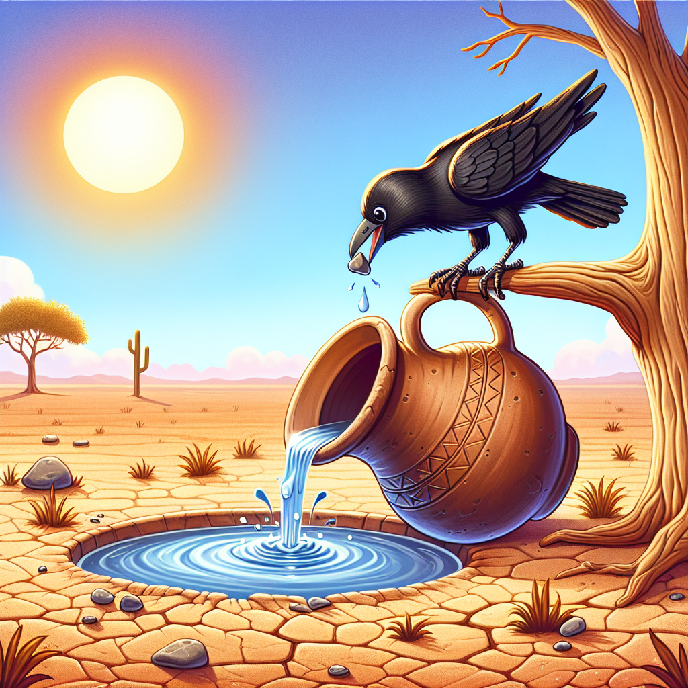

Generated Scenes
- 'scene 1: Once upon a time in a hot and dry land, a crow
was flying in search of water. The sun blazed overhead, and the crow
felt extremely thirsty. After a long search, he spotted a pitcher under a
tree. With hope in his heart, he swooped down to investigate.',
- 'scene 2: When the crow reached the pitcher, he was
excited to see that there was some water at the bottom. However, he
quickly realized that his beak couldn't reach the water. He tried and
tried, but no matter how hard he stretched, he couldn't get a single
drop. Feeling dejected, the crow sat on the pitcher and thought about
what he could do.',
- 'scene 3: Suddenly, he had an idea. He looked around and
noticed some pebbles scattered on the ground. With renewed hope, the
clever crow picked up a pebble in his beak and dropped it into the
pitcher. Plop! The pebble hit the water and made a small splash. The
crow smiled, realizing that the water level had risen slightly. He
picked up another pebble and dropped it in. Again, the water level rose a
little more. Encouraged by his progress, the crow continued to drop
pebble after pebble into the pitcher. Finally, after dropping enough
pebbles, the water level rose high enough for the crow to reach it. He
happily drank the cool, refreshing water, quenching his thirst at last.
Feeling grateful and proud of his cleverness, the crow flew away,
knowing that with a little creativity and determination, he could solve
even the toughest problems.'

Back